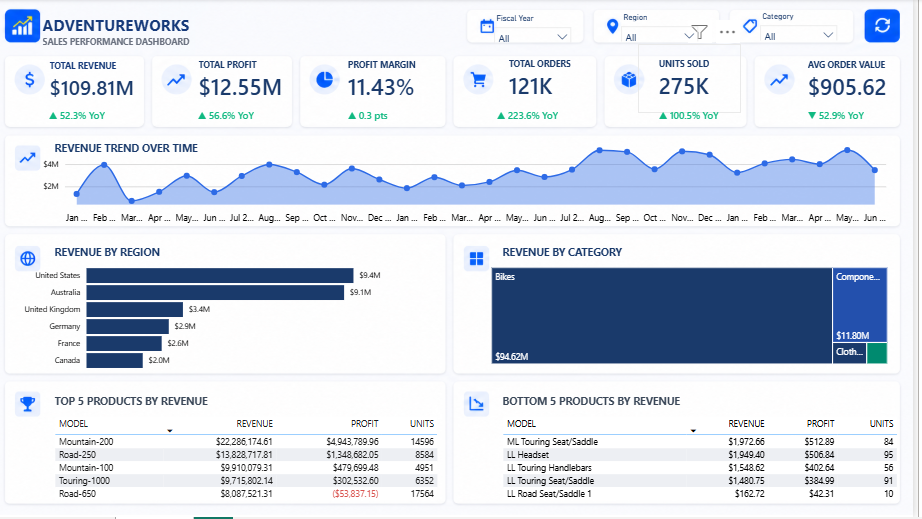
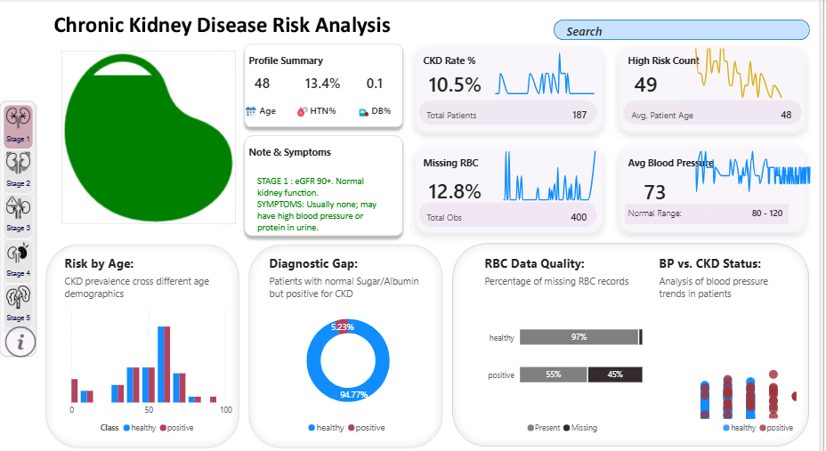
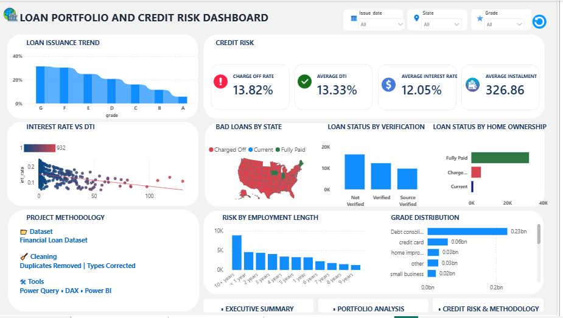
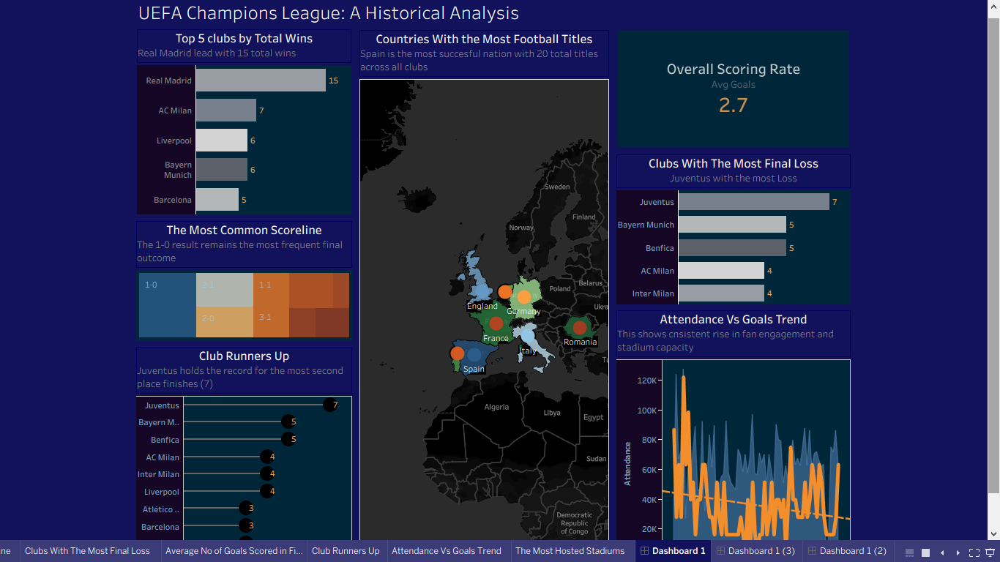
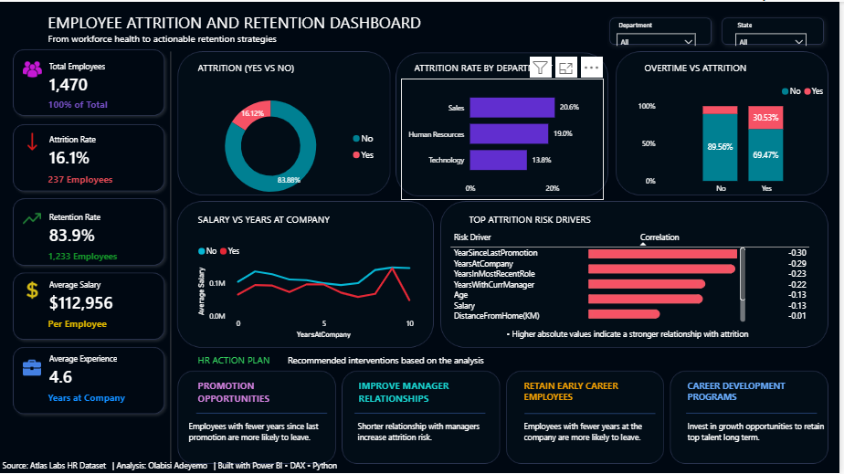
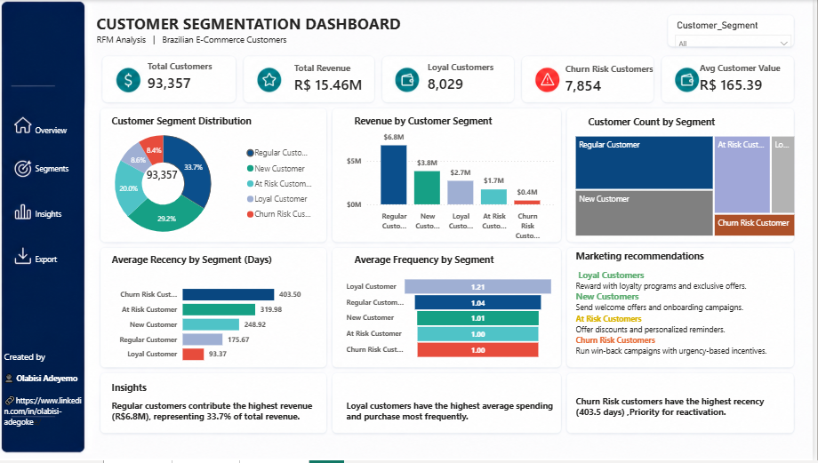

POWER BI • DAX
AdventureWorks Sales Performance
Executive dashboard tracking revenue, profit, margin, orders, units sold, regional performance and top products.
View Repository →DATA ANALYST • BUSINESS INTELLIGENCE
Turning data into clear insights, practical recommendations, and better business decisions.
From raw datasets to business-ready storytelling.
ABOUT ME
I am a detail-oriented Data Analyst focused on transforming complex datasets into meaningful insights. My work spans research, data entry, cleaning, integration, exploratory analysis, dashboard development, reporting, and data storytelling.
I enjoy identifying the problem behind the numbers, communicating findings clearly, and turning analysis into recommendations that stakeholders can act on.
SELECTED WORK
Six projects showcasing business, healthcare, finance, sports, HR, and customer analytics.

Executive dashboard tracking revenue, profit, margin, orders, units sold, regional performance and top products.
View Repository →
Healthcare dashboard examining CKD risk, patient profiles, diagnostic gaps, data quality, and blood-pressure patterns.
View Repository →
Credit-risk analysis covering loan issuance, charge-off rate, DTI, interest rates, state-level risk, and employment patterns.
View Project →
Historical analysis of wins, final losses, scoring patterns, attendance trends, and football success across countries and clubs.
View Repository →
Workforce dashboard exploring attrition drivers, retention, salary, experience, overtime, promotion opportunities, and HR actions.
View Project →
RFM analysis of Brazilian e-commerce customers, identifying loyal, new, at-risk and churn-risk segments and marketing actions.
View Project →TOOLKIT
LET'S CONNECT
I'm open to connecting, collaborating, and exploring data analytics opportunities.